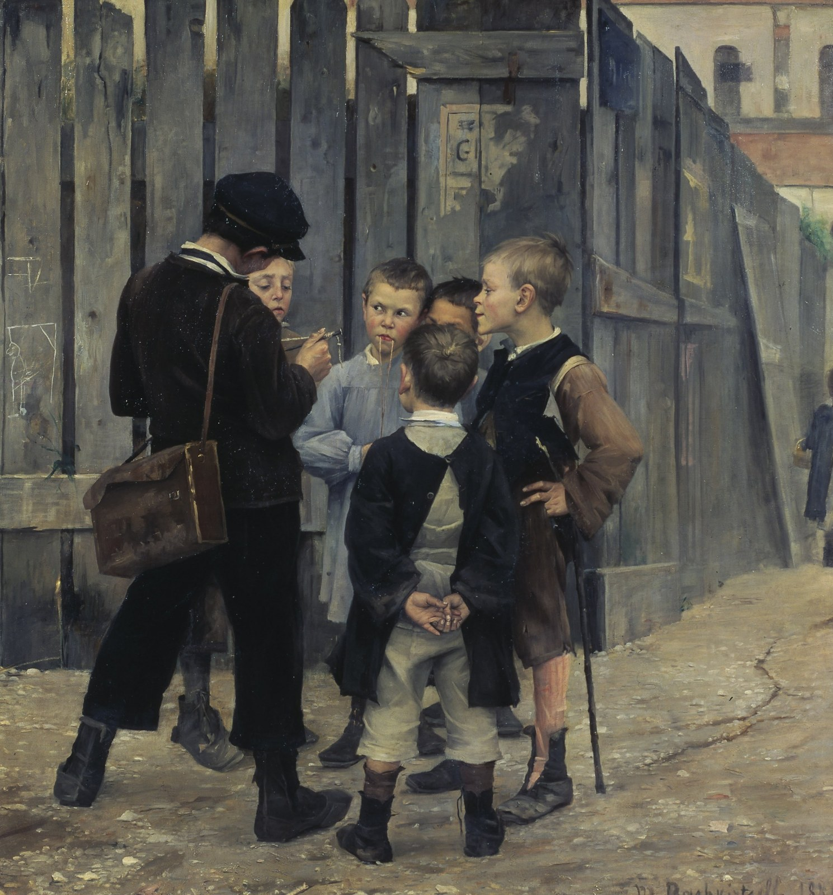

Français · 4e · 2026-2027
Français 4e : toute l'année
Vers le brevet : les capacités travaillées dès la 4e. Un parcours complet, prêt à l'emploi, pour une année qui change la donne.
La quatrième est un tournant.
Les cinq questionnements du programme y sont traités, avec des cours complets, une trace écrite à chaque séance, un travail à la maison toujours repris le lendemain, l'oral, les exposés, les évaluations et leurs grilles, de vrais cours de langue, et une ouverture vers la 3e.

Pourquoi la 4e est une année charnière
Cette page s'adresse d'abord à vous, qui ouvrez le cahier de textes de l'année. En 4e, les élèves n'entrent plus : ils basculent. Le corps change, les amitiés se recomposent, les premières questions d'amour et de loyauté deviennent sérieuses. La lecture aussi change d'étage : on ne se contente plus de suivre une histoire, on interroge un point de vue, une ironie, une valeur, une image. L'écriture s'allonge et s'organise. L'argument apparaît, à l'oral comme à l'écrit. L'autonomie se travaille vraiment, par la lecture cursive, le travail à la maison, l'exposé. Et les capacités du brevet commencent ici, sans attendre la 3e.
La progression ci-dessous monte d'un cran à chaque trimestre. Le premier installe des gestes solides. Le deuxième demande de délibérer et de confronter des valeurs. Le troisième forme le regard critique et ouvre déjà sur la 3e.
Adolescence
Se chercher pour de bon
Dire l'amour, tenir une valeur, affronter un dilemme : les textes de l'année parlent le langage des élèves, tout en les élevant au-dessus du seul vécu.
Lecture et écriture
Plus abstrait, plus long
On lit l'implicite, le point de vue, la chute, le discours rapporté. On écrit un récit cohérent, puis un paragraphe argumenté, puis un premier sujet de réflexion.
Vers le brevet
Des capacités dès maintenant
Comprendre un texte, réussir une dictée, réécrire une phrase, rédiger, lire à voix haute, soutenir un propos : tout cela se travaille en 4e, de façon progressive.
Le programme de l'année
En 4e, pour l'année 2026-2027, le programme de français reste celui du Bulletin officiel n° 31 du 30 juillet 2020. Le programme publié au BO n° 10 du 5 mars 2026 s'applique en 5e dès cette rentrée, et en 4e seulement à la rentrée 2027-2028. Voir aussi la page Enseigner au cycle 4 et le texte du programme de cycle 4 sur éduscol.
Les quatre entrées du programme ont, en 4e, un questionnement obligatoire chacune. Un cinquième questionnement, complémentaire, est traité ici en séquence complète, parce qu'il éclaire l'année et prépare le regard sur le monde.
T1 · Fiction
La fiction pour interroger le réel
Entrée : Regarder le monde, inventer des mondes. Œuvres : La Parure de Maupassant, puis, plus tard dans l'année, La Cafetière de Gautier. Du réalisme ironique au fantastique.
T1 · Poésie
Dire l'amour
Entrée : Se chercher, se construire. Un parcours poétique, de Ronsard et Louise Labé à Verlaine et Marceline Desbordes-Valmore.
T2 · Théâtre
Individu et société : confrontations de valeurs
Entrée : Vivre en société, participer à la société. Œuvre : Le Cid de Corneille. L'amour ou l'honneur, le devoir, le dilemme.
T2 · Complément
La ville, lieu de tous les possibles
Questionnement complémentaire, traité à part entière. Marivaux, Hugo, Baudelaire, et un regard d'histoire des arts sur la ville.
T3 · Médias
Informer, s'informer, déformer
Entrée : Agir sur le monde. Distinguer un fait et un avis, vérifier une source, lire un article engagé, écrire et dire une information fiable. EMI.
Toute l'année
Langue, oral, exposés, écriture
Une leçon de langue dans chaque séquence, des cours de grammaire et de lexique à part entière, l'oral évalué, un exposé par élève, l'histoire des arts et la lecture cursive.
Une progression qui monte d'un cran, trimestre après trimestre
-
Trimestre 1 · S'installer et s'affirmer
Évaluation diagnostique, puis La Parure et Dire l'amour. On consolide la phrase, les natures et les fonctions, les accords, les homophones fréquents, le récit au passé. On apprend à recopier une trace écrite, à apprendre une leçon, à rendre un travail à la maison qui sera vraiment repris le lendemain. Attendus de fin de trimestre : lire une nouvelle en repérant le point de vue et la chute ; réciter et expliquer un poème ; écrire un récit cohérent de trente à quarante lignes ; tenir cinq minutes à l'oral.
-
Trimestre 2 · Délibérer et confronter
Le Cid, puis La ville, lieu de tous les possibles. La barre monte : dilemme, valeurs, théâtre, description élaborée, proposition relative, subjonctif, premier paragraphe argumenté, premier exposé. Attendus : jouer et justifier une réplique ; défendre une valeur avec des exemples ; décrire un lieu en faisant voir ; présenter un exposé de cinq à huit minutes.
-
Trimestre 3 · Porter un regard critique, ouvrir vers la 3e
Informer, s'informer, déformer, puis La Cafetière, puis les premiers pas vers la 3e. Discours rapporté, modalisation, participe passé, voix passive, EMI, écriture de réflexion, entraînement aux gestes du brevet. Attendus : vérifier une information ; réécrire un passage ; réussir une dictée de brevet courte ; écrire une rédaction organisée ; entrevoir les questionnements de 3e.
Comment utiliser ce cours, y compris quand on débute ou que l'on est fatigué
Tout est écrit pour être pris tel quel le lundi matin. Chaque séance dure 55 minutes, minute par minute. Vous y trouverez le cours rédigé (pas un simple plan), la trace écrite à recopier dans le cahier, le volet de langue, le travail à la maison (leçon à apprendre, exercice court, lecture), son corrigé, et la façon de le contrôler en ouverture de la séance suivante.
Les traces écrites
Les élèves les aiment, et elles font la mémoire de l'année. Chaque séance se termine par un encadré à copier. On peut le dicter, le projeter, ou le distribuer à compléter.
Le travail à la maison
Il n'est jamais un à-côté. Court, précis, toujours corrigé. Les cinq à huit premières minutes de la séance suivante y sont consacrées : interrogation orale, ramassage ou mise en commun.
Les onglets de l'année
Les cours sont dans l'onglet Cours. Les autres onglets (langue, oral, exposés, évaluations, grilles, vers la 3e) se travaillent tout au long de l'année, pas seulement en juin.
Télécharger les documents
Chaque fichier est proposé en PDF, en Word et en LibreOffice, pour travailler sur papier ou adapter à votre classe.